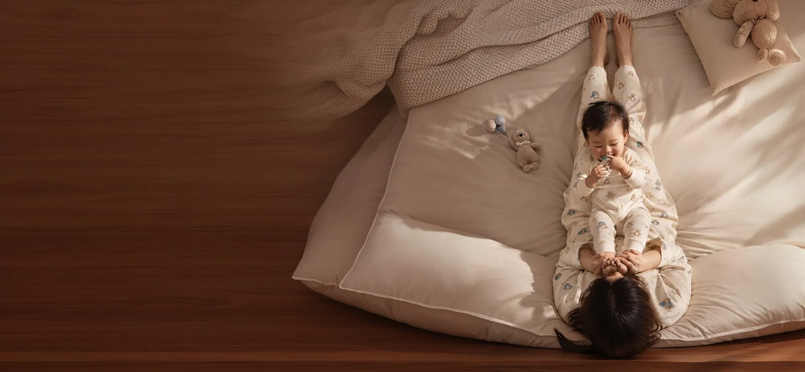
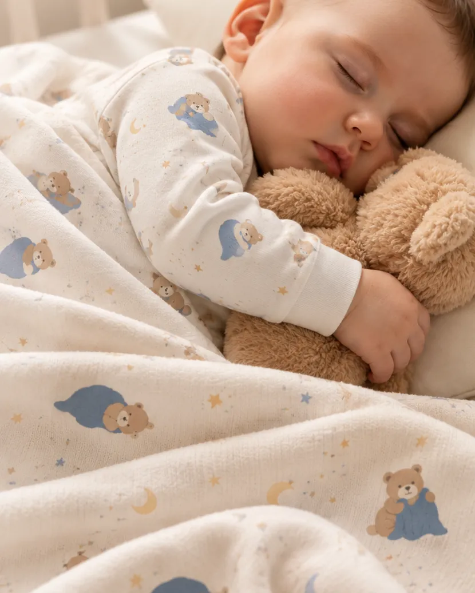

Parenting has enough guesswork. We’re here to rethink the little things.
Parenthood comes with a hundred little questions. What should they wear? Will they be comfortable? Is there an easier way? We’ve asked them too.
At Nurture & Next, we believe everyday parenting challenges deserve more thoughtful solutions. Ones that bring together smart ideas, practical design and a little imagination.
That’s why we’re starting with temperature-responsive sleepwear for changing nights and thoughtfully designed grip socks for little feet on the move.


The story behind Nurture & Next A little boy. A big life change. And a whole lot of questions.
Before motherhood, my world revolved around my career as a full-time consultant. Then came Taksh. And almost simultaneously, a move to Dubai. Life, as I knew it, turned upside down.
Different families. Different children. The same questions, again and again.
That’s when something clicked.
What if everyday parenting didn’t have to involve so much guesswork?

What if we could take the challenges parents face every day and turn them into thoughtful, practical solutions?
That idea became Nurture & Next. A brand born from real parenting experiences, built to bring together innovation, practical design and imagination.
Not to tell parents how to parent. Not to add another thing to their already-full plates. But to make the little things easier, more meaningful and a little more magical.

Because childhood is happening right now.
And we want parents to have more room to enjoy it.
Shop nowWhy Nurture & Next exists

Core purpose
To rethink everyday parenting challenges through thoughtful solutions that combine innovation, practical design and imagination.
Core belief
Less time figuring it all out. More time enjoying the little moments.
Brand positioning
Nurture & Next is a modern parenting brand creating thoughtfully designed products and experiences around real parenting needs.